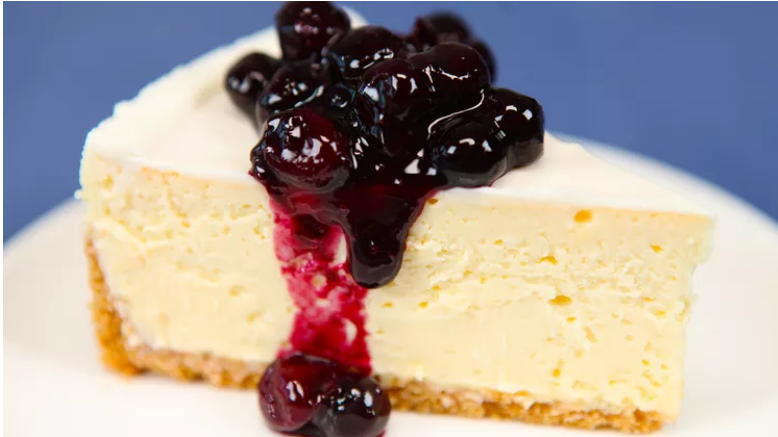

Cheesecake Factory Copycat Recipe
Home

Description
This cheesecake recipe is copied from The Spruce Eats. I have been making this recipe for years, and
it never fails to impress. It's creamy, it's delicious, and it's easy!
Something to note before we get into this recipe - pull your cream cheese and other dairy products out early! Like 4 hours
early for the cream cheese and maybe an hour early for the eggs and sour cream. It is imperative to the creamy texture
that all dairy is room temp before mixing. If you fail to heed this warning, you risk lumps forming in your batter. It
should also be noted that even if the batter is lumpy, the cheesecake will still taste delicious, and people will still
be impressed by your baking skills.
Ingredients
For the Crust:
- 1 1/2 cups graham cracker crumbs
- 1/4 teaspoon ground cinnamon
- 5 tablespoons butter, melted
For the Filling:
- 4 (8-ounce) packages cream cheese
- 1 1/4 cups granulated sugar
- 1/2 cup sour cream
- 2 teaspoons vanilla extract
- 5 large eggs
For the Topping:
- 1/2 cup sour cream
- 2 teaspoons granulated sugar
Steps to Make It
- Gather the ingredients. Preheat the oven to 475 F.
- Make the crust. Mix together the graham cracker crumbs and cinnamon in a medium bowl. Add the butter and mix in until the graham crackers resemble wet sand.
- Press the crumb mixture into bottom and 2/3 of the way up a 9-inch springform pan lined with parchment. Wrap a large piece of foil around the bottom of the pan and freeze until the filling is prepared.
- Make the filling. Use an electric mixer to beat the cream cheese, sugar, sour cream, and vanilla together in a large bowl until smooth and creamy. Scrape down the sides of the bowl.
- Whisk the eggs in a medium bowl, then add to the cream cheese mixture. Beat just until eggs are incorporated. Do not overbeat.
- Remove the crust from the freezer and pour in the filling. Carefully place the cheesecake into the preheated water bath.
- Bake for 12 minutes. Lower the oven temperature to 350 F and bake until the top of the cheesecake turns golden, 50 to 60 minutes. Remove the cheesecake from the water bath to a wire rack to cool completely.
- Make the topping. Combine the sour cream and sugar in a medium bowl. Spread the mixture over the cheesecake. Cover and refrigerate at least 4 hours before serving.
- Remove the sides of the springform pan and slice the cheesecake with a sharp knife dipped in hot water and wiped dry between cuts. Serve with fresh berries or fruit compote.